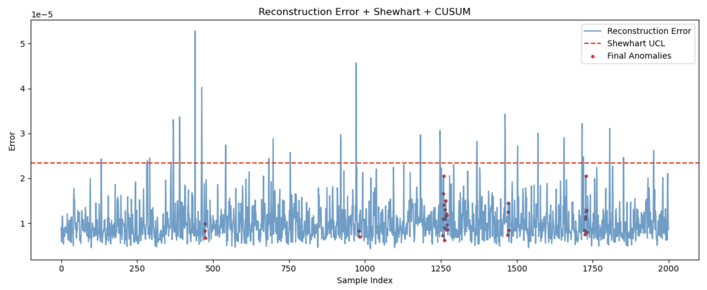

This project explores real-time anomaly detection for vibration signals using a 1D convolutional autoencoder deployed on NVIDIA Jetson. The system processes time-series data, produces a reconstruction-based anomaly signal, and applies statistical control methods to improve reliability.
The pipeline operates on fixed-length windows of vibration data:
Sensor → Windowing → Autoencoder → Reconstruction Error → SPC → Anomaly
Each window contains 1024 samples. The autoencoder reconstructs the signal, and the reconstruction error is used as a proxy for abnormal behavior.
The model is a lightweight 1D CNN autoencoder trained on normal operating data from the IMS bearing dataset. After training, it was exported to ONNX and compiled using TensorRT for deployment on Jetson.
Measured performance on device (NVIDIA Jetson Orin Nano):
This allows continuous monitoring without relying on cloud inference.
Instead of analyzing the raw vibration signal directly, the system evaluates reconstruction error. This compresses the input into a more stable signal that reflects deviations from learned normal behavior.
The error distribution shows a consistent baseline with intermittent spikes:

These spikes correspond to segments where the model struggles to reconstruct the signal accurately.
Raw reconstruction error is still noisy. To improve robustness, statistical process control techniques are applied:
The final detection logic combines these signals and retains only sustained anomalies over a short window.
The system captures irregular behavior while maintaining a low rate of spurious detections.
Applying control charts directly to vibration amplitude is sensitive to noise and variance. Using reconstruction error as an intermediate signal produces a more controlled input for statistical methods.
The autoencoder learns structural patterns in the signal, including frequency and temporal dependencies. The control charts operate on this derived signal, which improves consistency.
This implementation demonstrates a practical approach to edge-based anomaly detection. The combination of learned representations and statistical control provides a reliable signal while maintaining low latency on embedded hardware.